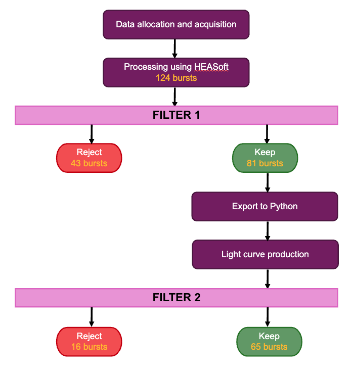
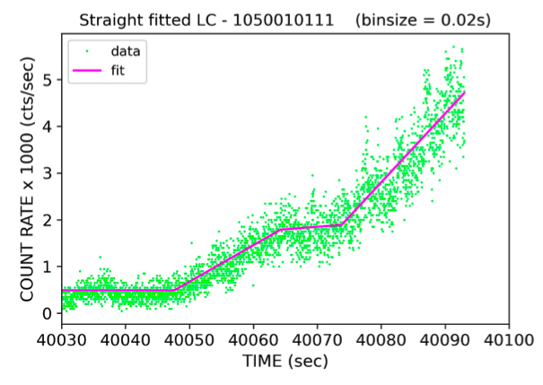
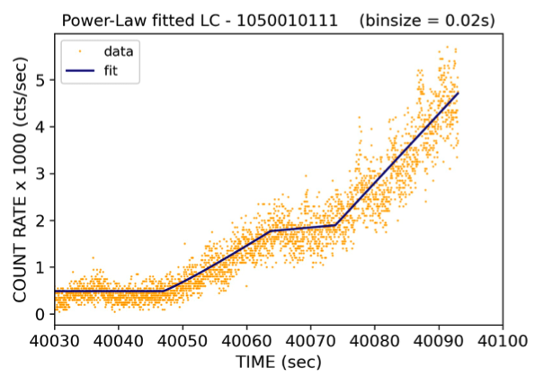
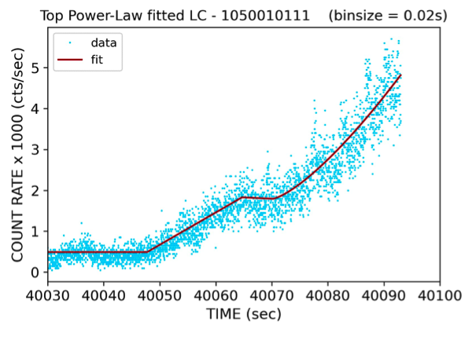

Site Overview
This site was originally created to present who I am beyond the limits of a CV. It now also serves another purpose: demonstrates my ability to learn new skills rapidly and apply them effectively.
With no prior experience in web development, I built this website from scratch using HTML, CSS, and JavaScript. I believe this website serves as a demonstration of my work ethic, adaptability, and determination to pursue a career in finance.

Contact Infomation
LinkedIn:
linkedin.com/in/harry-b-charlesworth
Email:
hbc1n21@gmail.com
Phone:
+44 7943 722901
Profile
Master's graduate in Physics with Astronomy (2:1) from the University of Southampton. Holding a strong foundation in quantitative analysis, programming, and data-driven problem-solving. Actively pursuing opportunities in finance, with a focus on quantitative and hedge fund analyst roles.
I’m experienced in both technical and fundamental analysis, have strong programming skills in Python, MATLAB, and Linux, and am developing competency in C++, HTML, CSS, and JavaScript. Through my MPhys dissertation and a funded research studentship, I gained extensive experience working with large datasets, building models, validating results through statistical significance testing, and delivering results to a deadline.
My academic and professional experiences have equipped me with the ability to break down complex systems, extract meaningful insight, and communicate findings clearly. Qualities that directly translate to market research, investment analysis, and quantitative problem-solving.
I am confident I will excel in an analyst role, and I am keen to start my career.
Key Highlights
- MPhys in Physics with Astronomy (2:1)
- Programming: Python, MATLAB, Linux
- Experienced in technical and fundamental analysis
- Seeking Analyst roles
Achievements & Interests
- UKMT Senior Maths Challenge – Highest score in year; Kangaroo round invite
- NEA Grade 8 Acting (Distinction)
- 1st XV Rugby (University & School)
- Ocean & Earth Football Club (University)
- Duke of Edinburgh Bronze & 10 Tors (35 miles)
- Sailing (RYAA, level 4)
- Piano & Trombone (ABRSM Grade 4)
- RYA Powerboat Licence
- Full colours for Drama (School)
Experience Timeline
Work Experience – Invesco
6 November 2025
Warehouse Assistant – The Range
16 June – 8 August 2025
Research Assistant – University of Southampton
10 June – 25 August 2024
Hospitality – Flora’s Food & Kitchen & Serve Southwest
2017 – 2024
Crew Member – McDonald’s
2020 – 2021
Estate Worker – Pontispool Equine Centre
2019 – 2020
Red Highlighted Experiences
The two experiences above are highlighted in red as they are the most directly relevant to the skills and mindset that I believe will be required for finance in analyst roles. Both provided hands-on exposure to data-driven decision making, performing under pressure, and environments where accuracy, reasoning, and clear communication really matter.
They represent the closest alignment between my academic background, technical ability, and my desired future direction in quantitative and investment-focused roles.
Invesco Experience Day – Detailed Summary
Invesco is one of the world’s leading asset managers, overseeing more than $2T in assets. My experience was centred on the trading floor, where I gained exposure to live execution, portfolio communication, and market decision-making, alongside time spent with teams across the wider business.
Key Highlights:- Observed how traders balance speed vs. price impact, manage broker conflicts, and execute large orders.
- Reviewed differences between traditional Active Portfolios versus the newer Passive products (e.g. ETFs) with senior traders.
- Spent time with the Head of European Equities and the Head of Derivatives.
- Discussed how geopolitical and macro events affected share price (e.g. how Ukraine peace deal headlines affect Defence, Oil, and Gas stocks).
- Explored technical baskets from the Quantitative Strategy team, and spoke about how trade ideas were generated, tested, and subsequently executed.
- Spoke with professionals across Sustainable Investing, Fixed Income, and the RFP team to build an understanding of the wider aspects of the business.
Overall, the day provided me with exposure not only to market mechanics and execution workflows, but also a clear insight into the culture, expectations, and cross-team collaboration within a large investment firm – reinforcing my ambition to pursue a career in finance.
Research Assistant – University of Southampton (Detailed Summary)
I was invited to undertake an eight-week funded research studentship after achieving 90% in my third-year final lab project. The project involved working with a hollow-fibre experimental set-up designed to operate under vacuum and cryogenic conditions - a complex setup that required careful optimisation and precision control.
Over the eight weeks, I gained a full understanding of the system, optimised light transmission through the fibre and set-up, and developed MATLAB control software for a nano-positioner used to house a sample. This included writing routines for positioning, calibration, and automated recall, as well as troubleshooting the hardware–software interface. Alongside this, I carried out signal checks, data collection and analysis, and solved unique problems requiring innovative thinking.
The placement strengthened several key skills:
- Hands-on problem solving with complex physical systems
- MATLAB programming, automation, and hardware control
- Data-driven reasoning and iterative optimisation
- Working with vacuum and cryogenic equipment
- Communicating technical progress clearly to senior academics
I successfully delivered the optimised setup and the full control code by the project deadline. Based on my performance, the senior academic I was working under expressed interest in creating a PhD opportunity for me.
Education
University of Southampton
Master of Physics with Astronomy (MPhys)
Second Class Honours, Upper Division
2021–2025
Blundell’s School
A Levels & GCSEs
2013–2020
- A Levels (June 2020): Maths (A), Physics (A), Drama (B), Extended Project (A)
- GCSEs (June 2018): 9 subjects including Maths and English
Standout Modules & Grade Achieved
- Mathematical Methods for Physical Scientists (68) Built a strong foundation in advanced mathematical techniques. The module is designed to provide the skills and confidence needed to apply a wide range of mathematical methods to problems in the physical sciences.
-
Statistical Mechanics (77)
Developed a rigorous understanding of probability distributions, the link between microscopic and macroscopic properties, and the statistical basis of thermodynamics.
This module also strengthened my data-driven reasoning and supported my understanding of risk analysis. - Electricity and Magnetism (89) Achieved an exceptionally strong grade in a mathematically intensive module, demonstrating attention to detail and confidence with abstract, multi-step problem solving.
-
Physics Skills: Programming and Data Analysis (74)
The primary goal of this module was to build the practical programming and data-analysis skills needed in both academic and professional settings.
The course focused heavily on Python, providing formal training in data handling and statistical analysis - skills directly transferable to many finance roles. - Physics from Evidence (Labs, 2nd & 3rd Year Average: 75) Showed a consistently strong practical and analytical performance in areas such as experimental design, uncertainty analysis, technical report writing, and presenting findings.
- Motion and Relativity (85) Performed exceptionally well in another mathematically intensive module. The content involved several non-intuitive concepts and required careful logical reasoning. The high grade reflects my ability to master complex theoretical material.
Standout Academic Achievements
-
90% – Third-Year Final Lab Project
Achieved 90% on my final third-year laboratory project, which led to an invitation to undertake
a fully funded 8-week summer research studentship. Details available under the "Experience" tab.
This project was completed collaboratively with a peer, demonstrating effective teamwork. - 95% – Advanced Quantum Physics Mini Dissertation Coursework for an Advanced Quantum Physics module that focused on quantum computing, the work provides an overview of key theoretical concepts and emerging applications in the field. View mini dissertation
-
First – MPhys Project (Dissertation)
Title: Modelling the Pause Phenomenon in X-ray Bursts from Low-Mass X-ray Binaries
During this project, I processed and manipulated large datasets in Linux, exported key segments to Python, developed a new model variant from existing approaches, fitted the data with multiple models to extract parameters, and validated the results through statistical significance testing.
This required building a systematic filtering pipeline, handling noisy real-world data, comparing competing models, and assessing the robustness of any detected features.
The work strengthened my coding ability, statistical reasoning, data-cleaning workflow, and confidence working independently on a complex analytical problem from start to finish.
Relevance to Finance:Although the project was astrophysical, the skill set is directly transferable to analyst roles.
The workflow mirrors the process of evaluating trading signals: large-scale data handling, noise reduction, model comparison, parameter extraction, robustness testing, and avoiding false positives.
It taught me to be sceptical of “nice-looking” features, to validate results quantitatively, and to build analysis pipelines that can be repeated, adapted, and stress tested. The same mindset required for research, portfolio analysis, and quantitative decision-making in finance.
We were required to produce a ‘plain English’ summary of the project. If you are interested in learning more about the dissertation, I would recommend reading that first.
Both the summary and the full dissertation were typeset in LATEX for a professional and publication-ready finish.
Projects
This tab details the projects I have undertaken, ranging from independent finance research to academic work and engineering / woodworking builds.
Monte Carlo Methods for Option Pricing
Breaking into quantitative finance is my long-term goal. Roles such as quantitative analyst, quantitative researcher, or hedge fund analyst are where I ultimately want to build my career. I'm very aware that these paths are competitive and often require a strong technical foundation, proven numerical ability, and willingness to start wherever is necessary and grow into more advanced roles over time.
I chose to build a project because talking about skills is never as convincing as demonstrating them. Monte Carlo option pricing is a perfect fit, fundamental to quantitative finance, mathematically rich, and technically demanding. Working through this project should allow me to demonstrate the core abilities I already hold and develop some of the skills required for quantitative roles.
After each phase is completed, this page will be updated with the progress made. Once the final report is written, it will be available here.
Current Stage: 2 - Research Phase
Project Sections
Select a section to jump directly to it.
1 – Project Overview
The project has been split into four distinct phases, with an additional final phase focused on peer review and professional feedback:
Phase 1 – Research Phase
Part 1: Gain a basic understanding of Monte Carlo simulations in general, and how they are applied to pricing options
Part 2: Review existing literature (academic papers) to build a solid mathematical and numerical foundation.
This phase ensures every later decision on models, methods, and implementation choices are grounded in establised theory.
Phase 2 – Determining Project Direction
Using the insights from the research phase, this stage defines the project's scope, structure, and technical priorities. In other words, this phase turns the research into a concrete project roadmap. The six Monte Carlo papers I’m reviewing will directly inform what gets implemented, in what order, and to what level of depth.
Phase 3 – Implementation
This phase is where the ideas become code, generating results and findings that I can discuss. This phase will deliver the bulk of the project and will have various sub-stages, to be determined in Phase 2.
Phase 4 – LaTeX Report
A polished write-up of the project will be completed. Presenting the models, numerical methods, results, and reasoning in a clear, professional, and reproducible format.
Phase 5 – Peer Review
The final stage, where the completed project and report are reviewed by industry professionals and peers. Their feedback will help refine the work and validate its quality.
2 – Research Phase (Phase 1)
I had come across the concept of Monte Carlo simulations during my degree, but my understanding was patchy and in reference to Physics rather than Finance. I started this project by researching Monte Carlo simulations, learning the fundamentals first, then moving on to how they are applied in a financial setting, and finally conducting a literature Review in reference to pricing options.
During Part 1 of this Research Phase, I came across new terminology and concepts that I would need to understand before moving on - this led to the creation of the Finance Glossary (found at the top of this page) that helped me understand terms and what they actually mean.
Part 1: Basic Understanding
This part consisted of watching and making notes on two YouTube videos. The summary can be found underneath this text, and the raw notes can be found next to each link. This step gave me a solid foundation of understanding before moving on to academic papers.
View Part 1 SummaryCovers: basic principles, how they can be useful, and gives 2 examples of MC simulations
Covers: What is MC in finance, how the simulations work, when you should use MC, Assumptions, Disadvantages, and calculating the Greeks.
Part 2: Literature Review
Now armed with a solid foundation, I collected 6 research papers. The aim of this part was to understand the theory and orient myself technically and mathematically. It also aims to provide the building blocks for the project as a whole and help with refining the scope.
Once the papers have been read and summary notes have been made, they will be available under each paper.
3 – Determining Project Direction (Phase 2)
Use the Research Phase to define the scope of the work, decide what I actually want to cover, and produce.
4 – Implementation (Phase 3)
Once key steps have been specified, perform the steps, which will involve modelling, options, engines, Greeks, etc.
5 – LATEX Report (Phase 4)
Write a report in LATEX, to showcase understanding and work achieved.
5 – Peer Review
The final stage, where the completed project and report are reviewed by industry professionals and peers. Their feedback will help refine the work and validate its quality.
Finance Glossary Project
When I started the Monte Carlo Methods for Option Pricing project, I came across new terminology that I would need to understand before I could start the project phases (i.e. Early Exercise, Greeks, Non-linear Risk).
Understanding the terminology used in finance wasn’t new; I had already researched certain areas for experiences (i.e. Invesco), interviews (i.e. Ebury), and a general interest in finance. For those examples, I created revision cards for terminology and looked terms up until I was satisfied I understood the word or phrase.
Having kept the revision cards and now having a new list of words to investigate, I decided to build a glossary of all the finance terms I had come across. Initially intended to be fully alphabetical with no categories, the first version was a mess. It was just a bank of words that didn’t help with understanding concepts in finance.
The glossary needed organising - this was done through the use of categories. Details on the categories chosen is below, but for example, all assets are organised under the Asset tag and grouped together in the glossary.
This project has taught me a lot about finance terminology, how some terms can have multiple meanings (i.e. Alpha as a performance indicator vs Alpha as the drift term), the classification of concepts, and what belongs in each category. It has also forced me to check my understanding of ideas I thought I already understood.
The glossary will be continuously updated as I conduct research and learn. It currently sits at 246 terms with 20 categories - link to the glossary below.
View GlossaryGlossary Categories
Fitting terms into groups helped me understand not just what each word means, but how the pieces fit together. These categories helped turn a list of definitions into a clearer picture of how finance, markets, and quant methods interact.
Below are the categories used in the glossary, with the first three terms shown beneath each title
1 – Asset
(Bonds, Cash, Commodities ...)
2 – Asset Class
(Alternatives, Cash & Cash Equivalents, Commodities ...)
3 – Currency (FX)
(AUD, Cable, CAD ...)
4 – Derivative
(Asian Option, Barrier Option, CFD ...)
5 – Execution
(Best Execution, Market Execution, Market Impact ...)
6 – Finance Concept
(Macrotrends, Market News & Events, Speculation ...)
7 – Financial Instrument
(Cash, Complex, Components ...)
8 – Fintech Product
(APIs, Cash Management Products, Currency Accounts ...)
9 – Fund
(Active Fund, ETF, Hedge Fund ...)
10 – Index
(AEX, CAC 40, DAX ...)
11 – Indicator
(EMA, Moving Average, RSI ...)
12 – Investor
(Institutional Investor, Market Practitioner, Retail Investor ...)
13 – Market Structure
(Bid / Ask, Broker, Broker Relationships ...)
14 – Portfolio Concept
(Diversification, Multi-Asset, Portfolio ...)
15 – Quant Method
(Backward Induction Approach, Binomial Tree (Lattice Model), Black Scholes P.D.E ...)
16 – Risk Concept
(Credit Quality, Interest-Rate, Interest-Rate Risk ...)
17 – Signal
(Breakout, Crossovers, Mean Reversion ...)
18 – Statistical Concept
(Alpha (Drift Term), Bivariate Distribution Test, Changing Distributions ...)
19 – Trading Strategy
(Arbitrage, Delta Hedging, Delta Neutral ...)
20 – Underlying
(Bonds, Commodities, Driving Asset ...)
This Website
I initially wanted to create a website to provide a deeper explanation of who I am and what I have done. A CV can only show so much, and many aspects of my experience, skills, and personality simply cannot be conveyed on a single sheet of paper.
This website now also stands as a testament to my drive, determination, and adaptability. Once I decided to build it, I explored three different approaches:
- Online website builders such as Wix which allow you to assemble pages using standard visual tools.
- AI-driven platforms, where a chatbot edits or generates the code behind the scenes.
- Building a website entirely from scratch, using HTML, CSS, and JavaScript.
To have full control over the structure, behaviour, and appearance of the site - and to challenge myself - I chose to build it from scratch.
Starting from completely blank pages in TextEdit, I wrote the initial scripts needed to host a local test page. From there, every single line, colour, indent, layout choice, tab, and interactive element has been written by hand.
Behind The Curtain
This website runs on three programming languages, which, before this project, I had never worked with. I now have a much deeper understanding of all three.
HTML controls what appears on the screen, defining the main structure, layout, and content of each page.
CSS controls the visual appearance, styling, and layout, including fonts, spacing, colours, the folder-style tabs, and responsive behaviour across different screen sizes.
JavaScript adds interactivity, such as the dynamic tab system and the clickable project boxes at the top of this section.
For code snippets taken directly from the scripts behind this site, visit the Software tab and click on HTML, CSS, or JavaScript.
Current script sizes:
- HTML – 2497 lines
- CSS – 1350 lines
- JavaScript – 59 lines
Website Development Timeline
Tuesday 25th November
Came up with the idea for the website, sketched the layout, and planned what each tab would contain. Created the first scripts needed to open an HTML file locally and display a blank page.
Wednesday 26th November
Worked on the Home tab, Education tab, and overall layout structure.
Thursday 27th November
Completed major work on the Experience tab, Skills tab, and most of the Software tab.
Friday 28th November
Built the Projects tab, checked the entire site for consistency, fixed layout issues, and prepared the site for deployment. Published the website live.
Monday 1st December
Created the Finance tab after listening to feedback from finance professionals.
Masters Project
This project has been mentioned in various places on this website. Under the Education tab,
I covered the basics of the project and its relevance to finance, and the Software tab
covers the technical tools used.
In this section, I want to cover how the project was approached and ultimately how I executed a complex
analytical problem.
Masters Project Sections
Select a section to jump directly to it.
1 – Project Overview (Analytical Perspective)
From a data/analysis perspective, I wanted to take noisy astrophysical data, clean it, find key features, cut down the large dataset, fit with multiple models, compare model results, validate results statistically, interpret findings, and present results.
In practical terms, a very interesting feature in the light curves (plotted intensity of an object against time) had been observed twice in recent years, an apparent pause in counts during the rise phase of a burst. I was searching a very large database to find as many examples of this feature as possible.
To understand the pause feature, astronomers need much more information than two examples can provide. Questions such as: How often does it appear? What conditions are necessary for the feature to be produced? Does it appear every time? Is the feature real? What physics is at play to make the feature appear? can only be answered when there are more examples to study.
My project revolved around finding as many examples of this pause feature as possible, so future work could potentially answer the questions above.
2 – Research Phase & Strategy
To begin the project, I conducted thorough research of academic papers and online material, searching for a few key details:
- Previous findings of the pause feature
- The physics at play
- Modelling methods
- Common approaches to presenting burst data
- Gaps and inconsistencies across papers
- Latest findings and studies
I collected a significant number of papers, skimmed through to assess relevance to the areas above, flagged papers by importance, printed key studies for closer assessment, and finally made bullet-point style notes.
This phase was essential to the success of the project, as it allowed a deeper understanding and previous work to guide the rest of the project.
3 – Data Pipeline Phase
Once 248 bursts (the pause feature happens during a burst) from 50 sources (i.e. stars) had been identified, I employed the following systematic approach for handling data:
Filter 1 represented removing bursts that could not be identified; Filter 2 was a quality assessment. The quality assessment removed bursts for various reasons, such as excessive noise, severe background contamination, energy filtering suppressing the burst rise phase, or absence of a distinct burst signature.
After the initial screening, I searched the remaining 65 bursts for any sign that the feature might be present, and ended with 26 candidate bursts.
4 – Modelling
The bursts were modelled using piecewise fitting. This effectively gets a computer program to trial different lines and curves over the data and select the most accurate combination.
In practice, the combinations of lines and curves have to be specified. The program is given an equation for each segment (e.g. a straight line y = m·x + c or a power law y = A·xk), and tries different combinations of the variables y, m, x, c, A, k, constantly comparing which combination gave the closest fit.
The best fit was determined by calculating a chi-squared value, which measures how accurately a given line represents the data it is covering.
Four segments were defined in Python:
- 1st Segment: models the background level of counts
- 2nd Segment: models the initial rise in counts
- 3rd Segment: models the feature I wanted to study
- 4th Segment: models the continued rise in counts after the feature
Three different model variants were used, following the structure below:
Model Variants
| Segment | model S–S–S | model P–S–S | model S–S–P |
|---|---|---|---|
| 1st Segment | Straight line | Straight line | Straight line |
| 2nd Segment | Straight line | Power law | Straight line |
| 3rd Segment | Straight line | Straight line | Straight line |
| 4th Segment | Straight line | Straight line | Power law |
Below is an example of the same burst fitted with the three different models.
  5 – Time-Binning & Mitigating Bias
Time-binning became one of the most important parts of the project, mainly because of how easily it could introduce subjectivity into the results. When plotting burst data, the choice of time bin directly affects the appearance of the light curve, how smooth or noisy it looks, and—critically—whether a pause is visible at all.
To reduce the risk of “choosing” bins that supported the presence of a pause, I standardised the entire analysis to a bin size of 0.01 s. This gave high time resolution and ensured all initial fits were performed consistently.
However, using only one bin size still carried the risk that the results were influenced by the chosen resolution. To address this, I repeated the entire modelling process at 0.02 s and 0.05 s. Every burst was therefore fitted three times with three different levels of smoothing.
The goal was simple: if a pause was genuinely present in the data, it should appear in all three time-binnings — not just one.
Comparing the fits across all three resolutions acted as an additional robustness test, helping highlight cases where the “pause” might simply be the result of noise, under-binning, or over-smoothing.
This approach made the final significance testing far more reliable and prevented the analysis from being driven by choices that could unintentionally support the outcome I was expecting.
Below is an example of the same burst with three different time-binnings.
6 – Statistical Significance Testing
Once bursts had been modelled and a pause had been detected, the light curves were assessed for statistically significant pauses.
Statistical significance was tested in two ways:
- Pause length significance
- Pause gradient significance
To assess pause length significance, the measured pause length was divided by its associated error, giving a significance in units of standard deviations (σ). A minimum threshold of 3σ was required for a pause to be considered significant.
To assess pause gradient significance, the gradient value was divided by its associated error, again giving the significance in standard deviations (σ). A gradient was considered significant if it exceeded the 3σ threshold.
Across 112 significance tests (different bursts, models, time-binnings, pause lengths, and gradients), 31 tests were found to be significant — corresponding to 10 individual model fits across 7 bursts.
Only one burst had consistent significance across both pause length and pause gradient:
- Source: 4U_0513-40 OBSID: 1050010111
Two other bursts had consistent pause-length significance only:
- Source: 4U_1636-536 OBSID: 1050080112
- Source: 4U_1728-34 OBSID: 1050150127
It is important to note that pause gradient significance is not as important as pause length significance. The primary question is whether a pause is present at all, rather than the exact shape it takes.
7 – Key Findings
The results can be summarised as follows:
Three bursts exhibited statistically significant pauses across all corresponding tests. The sources and measured durations were:
- 4U_0513-40 — pause of 10.07 s ± 0.38
- 4U_1636-536 — pause of 0.47 s ± 0.053
- 4U_1728-34 — pause of 0.53 s ± 0.014
Of these, the pause detected in 4U_0513-40 was the most robust, with concerns regarding model dependence affecting the other two detections.
In short, the project found a very convincing example of the pause feature in 4U_0513-40, showing significance across all models and all time-binnings tested.
Examples of the final light curves showing clear pauses can be found in Section 4 – Modelling.
8 – Dissertation Writing
The final aspect of the project was producing a full write-up — the dissertation.
The dissertation contained:
- Abstract
- Introduction
- Theoretical Background
- Methods
- Discussion
- Conclusion
- Appendix
- References
The Theoretical Background section was based heavily on the earlier bullet-point notes produced during the Research Phase.
As mentioned elsewhere on this site, the report was typeset in LATEX for a professional and publication-ready finish. Both the dissertation and the summary report can be found at the top of this section.
The summary report and the full dissertation can be found below:
View Summary View Dissertation9 – Analytical Skills Demonstrated
IMPORTANT NOTE: The following skills and explanations were generated by AI (ChatGPT) - I was unsure what skills were relevent in a finance setting, so I fed the AI my Dissertation, the Summery Report, and the Infomation on this page. The following is what it determined to be the best analytical skills displayed throughout the project.
- Independent research & critical evaluation — filtering large numbers of papers, identifying relevant modelling approaches, spotting inconsistencies, and deciding which methods were reliable enough to build on. This mirrors how analysts evaluate conflicting market views or research signals before committing to an idea.
- Building a reproducible data pipeline — constructing a workflow that consistently transforms raw data into clean, analysable segments, with standardised filters and export steps. This reflects the need for structured, auditable processes when working with financial datasets.
- Noise reduction & bias control — recognising the risk of subjectivity in choosing time bins, standardising the binning to 0.01 s, and then repeating the full analysis at 0.02 s and 0.05 s. Comparing all outcomes helped avoid “nice-looking but false” signals, directly paralleling robustness testing in quantitative finance.
- Model comparison & statistical validation — comparing multiple model variants, evaluating chi-squared values, assessing parameter stability, and running 112 significance tests. This reinforced the habit of relying on statistical evidence rather than intuition.
- Interpreting complex systems — focusing not just on getting models to fit, but on understanding why certain bursts showed strong evidence while others did not. This required breaking down a complex system and deciding which results were genuinely meaningful.
- Structured communication — producing both a detailed dissertation and a clear summary, explaining complex concepts logically and accessibly. This is directly relevant to presenting analysis, writing research notes, and communicating model behaviour in a finance context.
10 – Project Workflow
Topic Familiarisation & Initial Research
Defined the project scope, gathered key papers, and produced the first bullet-point notes summarising previous findings and modelling strategies.
Data Acquisition & Pipeline Design
Retrieved the dataset from HEASARC, tested HEASoft tools, and established the filtering pipeline used throughout the project.
Screening & Quality Assessment
Manually inspected bursts, applied quality filters, removed contaminated or unusable data, and produced the final list of candidate bursts.
Initial Modelling & Parameter Extraction
Implemented the piecewise fitting method in Python, defined the model variants, and produced the first round of fits.
Robustness Testing
Repeated the analysis using 0.01 s, 0.02 s, and 0.05 s bins. Compared results across all models to evaluate consistency and reduce bias.
Statistical Testing & Interpretation
Ran significance tests, organised results, identified the strongest detections, and interpreted the implications for the physical phenomenon.
Writing Phase
Drafted the dissertation, compiled plots, developed the theoretical background, and integrated findings into a coherent document.
Final Review & Submission
Revised the full report, corrected formatting issues, polished the LaTeX typesetting, and submitted the completed project.
11 – Terminology
- Burst
- A thermonuclear explosion on the surface of a neutron star.
- Pause
- An apparent temporary stall in energy output during the rise phase of a burst.
- Light curve
- A plot of detected counts (energy) against time.
- Model
- A specific fitting method applied to a dataset to extract patterns or parameters.
- Model Variant
- A modified version of a model with structural changes, for example, mixing straight-line and power-law segments rather than fitting only straight lines.
- Rise Phase
- The portion of a burst where energy increases from background levels to peak intensity, before the subsequent decay.
- Chi-squared value
- A statistical measure indicating how closely a fitted model matches observed data.
- Time-binning
- The process of grouping continuous time data into discrete intervals (e.g. 0.01 s, 0.02 s, 0.05 s).
- OBSID
- Observation ID — used to categorise datasets within the HEASARC browser.
- Source
- The object from which the burst originated; here, exclusively low-mass X-ray binaries (LMXBs).
Engineering
During my final year of university, I undertook a project unlike anything I had attempted before.
The Aim: To open my curtain from bed.
The Reasoning: I’ve always found that I don’t fully wake up until I see natural light, so I wanted an automated way to bring sunlight into the room the moment I woke up.
(There was also the incentive of potentially expanding the project into a viable business idea.)
Initial Concept
I first worked on how to get the curtain to move. I sketched multiple concepts and settled on a simple “reel-in” mechanism as the most reliable way of pulling the curtain open.
The idea was straightforward: use a spinning motor shaft to reel in a length of string attached to the curtain, with the motor mounted at the end of the curtain pole.
Remote Activation
Next, I needed to activate the motor remotely. The simplest solution was to use a pre-built remote control system. I chose a garage-door opener relay module.
With the idea clear in my head, I purchased everything I needed for £35.47:
- 1 × Remote Control Relay
- 1 × 10 pcs Micro DC Motors Kit
- 1 × Electronics Kit
- 1 × Double AA battery holder
Prototype 1
The next stages involved a lot of trial and error — and improvisation.
The two AA batteries were not powerful enough to activate the remote relay. It required over 12V to function, so I wired in two 9V batteries instead.
I created a makeshift reel using a broken Bic pen, some cardboard, string, and a hook from a clothes hanger.
The whole setup was mounted onto the corner of an old chopping board. (I needed a strong base that I could shape — the spare plastic board was easier to cut than wood!)
Prototype 1 had one major flaw: the motor simply wasn't powerful enough. It was designed for model aeroplanes, prioritising high RPM rather than torque.
Final Version
Not wanting to give up, I purchased a more powerful motor:
In heindsight the motor was overpowered for what I required, but at the time I didn't want to waste money with another underpowered motor.
With the new motor installed and rewired (this time requiring proper soldering), the curtain opener finally worked.
Below is the final video of the curtain-opening mechanism in action:
Woodworking
I have undertaken various woodworking projects over the years, developing precision, structured problem-solving, and patience.
Below are three example projects, showcasing current work, reclaimed wood builds, and fine woodworking.
Current Restoration Project
I am currently restoring three pine boxes; they have been used and abused for many years by my younger self. Even wrote my name on them to avoid my sister claiming ownership.
I am in the process of sanding them down, starting with 60-grit sandpaper and gradually working up to 180-grit for a smooth finish. The final stage will involve applying a wax finish.
Below are two of the pine boxes — the left in its original condition, the right sanded at 60-grit on flat surfaces.
Reclaimed Wood Project
Using a reclaimed scaffolding board, I built both a shoe rack and a hanging clothes rail. The supports for the shoe rack were also reused from an older project, while the threaded metal bars for the hanging storage had to be purchased.
Below is the shoe rack (left) and the hanging storage (right).
Bedside Table
This bedside table was custom-built to fit a specific space next to my bed in a previous house. It includes book storage at the front, open storage underneath, and a hidden compartment accessible beneath the hinged lid.
Below is the bedside table in both the closed and open positions.
Key Skills
- Quantitative analysis and modelling
- Programming (Python, MATLAB, Linux)
- Data analysis & statistical reasoning
- Technical documentation ( LATEX )
- Independent research & problem-solving
- Communication & presenting
- Teamwork & collaboration
- Adaptability & willingness to learn
Technical Skills
- Developed strong programming skills in Python, MATLAB, and Linux through academic modules, projects and professional experiences.
- Comfortable with data cleaning, model fitting, model creation, visualization, statistical analysis, extracting key parameters from data, object-oriented programming, scripting, and handling large, messy datasets.
- Developing further skills in C++, HTML, CSS, and JavaScript through independent projects such as this website.
- For code snippets and more information, please visit the ‘Software’ tab.
- Statistics: Applied statistical testing, parameter estimation, and uncertainty analysis to real-world astrophysical data from NASA’s NICER mission.
- Exceptionally strong data analysis skills. Developed through lab modules, master’s project, the funded research studentship, and other academic experiences.
- Experienced in comparing models, validating results, avoiding false positives, and mitigating bias. Directly relevant to evaluating trading signals and investment ideas in a financial setting.
- Developed and refined quantitative models to explain observed phenomena, including creating a new model variant for my MPhys project.
- Comfortable breaking down complex systems into tractable components and building structured, testable models.
- Proficient with spreadsheets for analysis, data organization, and simple modelling.
- Comfortable moving between Python/MATLAB and Excel, depending on the audience and task.
- Produced multiple professional-quality reports, often in LaTeX for clarity and precision. Please see the three links under the ‘Education’ tab for examples.
- Experienced structuring complex material in a manner that is easy to follow for non-specialist readers. Such as the Summary report found at the bottom of the ‘Education’ tab
Analytical Skills
- Experienced in designing and executing independent research projects. e.g. Master's project, Advanced Quantum Physics coursework.
- Comfortable synthesizing information from multiple sources and challenging assumptions when the data do not support them.
- Trained to construct clear, logical arguments backed by data – a skill that translates directly to investment theses and trade rationales.
- Used to documenting assumptions, limitations, and edge cases when presenting models or results.
- Capable of moving beyond calculation to identify what results actually mean, and what they imply for decision-making.
- Comfortable working with noisy, imperfect data and still extracting robust, defensible conclusions.
Personal & Creative Skills
- Enjoy hands-on projects such as engineering builds and woodworking, including designing and building a motor-driven curtain opener from spare components. See engineering project.
- These projects reinforce resourcefulness, iterative problem-solving, and attention to detail.
- Used to approaching problems from first principles and testing unconventional solutions when appropriate.
- Comfortable working through complex, open-ended tasks without a pre-defined method.
- Experience working in lab groups and project teams, dividing tasks efficiently while maintaining a shared understanding of the overall goal.
- Comfortable contributing ideas, taking feedback, and supporting others to deliver on time.
- Regularly presented findings through written reports and oral presentations to academic staff and peers.
- Able to adapt explanations for technical and non-technical audiences.
- Demonstrated by learning web development from scratch to build this site, as well as picking up new tools and methods during my degree.
- Comfortable stepping into unfamiliar domains, learning quickly, and applying new skills in a practical, results-focused way.
Software
This section showcases the main advanced tools and languages I can use. Covering data analysis, modelling, and documentation, and building this website.
Click a link below to jump to its section!
Python (Programming Language)
Used for data analysis, model fitting, model creation, visualisation, statistical analysis, extracting key parameters from data, object-oriented programming, scripting, and handling large, messy datasets.
Python was the first programming language I learnt, and my first experience was through an academic module: Physics Skills: Programming and Data Analysis (74).
Since then, I have used it extensively in lab modules, personal projects, and critically, in my master’s project.
For my master’s project, I used Python to plot data extracted from NASA’s NICER mission, apply model fitting, created a new model variant, extracted key parameters, and then prepared data for export to Excel for interpretation of results.
Below are examples of the code used for fitting a power-law model to the burst data (the second image shows the fitting section). The last image is the resulting plot of the burst data with the model fitted on top.
The start of the script was written in such a way that when wanting to fit multiple bursts, everything that needed changing between bursts was easily accessible at the top. (First image)
Above: Fitted Light Curve for 4U 0513-40. Showing a clear pause in the second fitted segment. Here, the Green dots are the number of X-rays detected every 0.05 seconds, and the pink line is the fitted model.
From the equations governing the pink line, we can determine how fast the burst started, where it paused, and how long it paused for. Additionally, I then calculated how good the fit was by calculating the chi-squared value, an indicator of how accurately the model represents the data.
MATLAB (Programming Language)
MATLAB was the programming language of choice for my summer placement at the University of Southampton. Having no prior experience with it, I learnt the basics first, then developed a strong understanding over the 8 weeks I was working.
It was used for two main purposes:
1 – Controlling an attocube nano-positioner for experimental positioning of a sample
2 – Producing plots and performing light modelling on resulting data – mostly as a method of debugging issues.
The syntax felt very similar to Python, so I picked it up quickly, by the end of the placement. I was confident using MATLAB for automated control, data handling, and visualisation.
Below is an example script that I produced during the placement; this script handled moving the positioner to a predetermined location, acting as a starting point or a recall after movement.
The next image is an extract from the logbook I kept during the placement. It shows two plots:
Top – ‘Power vs Ticks’, this is the transmitted power through the optical setup against movement ticks (Due to how small the movement is, a true step size cannot be certain. A small voltage is applied that moves the positioner 1.7 µm on average, each jolt of movement is called a ‘tick’)
Bottom – ‘Transmissions ratio vs X’ this is a plot used to work out the maximum transmitted power we could expect based on the optical setup’s current state.
Linux (Operating System)
During my master’s project, the acquisition, manipulation, and cutting of data were performed within a Linux environment.
Data was obtained from NASA’s HEASARC Browser and then processed using HEASoft, a unified package for X-ray data analysis. Within the HEASoft environment, several key commands were run:
nicerL2 indir=OBSID clobber=YES
Runs NICER level-2 calibration that includes standard calibration, screening, and filtering of data.
xselect
Launches Xselect to allow reading in of events and application of key Ftools listed below.
set binsize 0.01
Sets the time bin size on the light curve, here 0.01 s. Smaller bin sizes yield more accurate representations of observed counts but introduce larger errors due to fewer counts per bin.
filter pha cut 30 1000
Applies an energy filter with lower (30) and upper (1000) cutoff, here corresponding to 0.3–10 keV (note: pha = pulse height amplitude). This filter removes photons outside of this energy range, which is standard practice for NICER observations of compact objects, as it ensures relevant data and reduces background noise.
Once the raw data had been processed, the data was plotted to locate the area I was interested in (the burst). The data itself was an almost continuous acquisition from instruments onboard the International Space Station; the bursts had to be located manually.
Once located, I cut down the data to just include the burst and prepared it for export to Python for modelling and analysis.
Below is an example of what the data looks like after processing. The vertical line marks the burst. The Y-axis shows Rate as counts/s (think of this as energy being detected from the star). The X-axis is time in seconds – here we see ~20 hours of exposure.
LATEX (Document Typesetting Software System)
I have written important documents in LATEX since my third year of university, using Overleaf, an online LATEX editor.
Writing in LATEX not only allows better control over how documents are laid out, but once past the initial learning phase ,it becomes much easier to produce a professional and publication-ready finish.
Below are three examples of work that have been written using LATEX .
Excel
I have used Excel for many years for basic recording, organisation, and analysis of data.
I am comfortable using formulas, building structured spreadsheets, and applying conditional formatting rules (for example, automatically highlighting cells in red when a condition is not met).
I do not consider myself an advanced user, but I am confident working with data in Excel, creating clean tables and charts, and using Excel alongside Python when organising and presenting results.
HTML (Markup Language)
This website uses HTML to control what appears on the screen, defining the main structure, layout, and sections.
Before starting this project, I had never worked with HTML. As of the completion of this website, the codebase sits at 2497 lines.
The snippet below covers the “Standout Academic Achievements” section of the Education tab:
CSS (Styling Language)
The CSS script controls visual appearance and layout, covering fonts, spacing, the folder “tabs” look, and the responsive layout.
Again, I had never worked in CSS before this website. The style sheet currently sits at 1350 lines.
The snippet below covers some of the “Experience Timeline” code, which can be found at the top of the Experience tab:
JavaScript (Programming Language)
JavaScript is used to implement interactive behaviour, here used to add interactive tab functionality. JavaScript marks the third new language that has been used to build this site.
The script currently sits at 59 lines:
Finance
Why Finance, Not a Physics PhD
Before settling on finance, I was on track to undertake a PhD in Physics. At the end of my time as a Research Assistant, a senior academic told me that if I was interested, he could create an opportunity under his supervision and that I would be “invited to apply”. I was also approached about a different PhD within the University; the professor running that project prefers to take on Southampton graduates, and my name had been suggested to him.
In the end, I turned down both opportunities. My work in the university laboratories had exposed me to the day-to-day environment, and although it was mentally engaging, everything was extremely slow-paced. When you're working with expensive equipment, the slow and steady approach makes sense - but it just wasn’t the right fit for me.
Having decided not to pursue a PhD, I started to evaluate my options. I looked at what skills I actually had, what kind of work genuinely interests me, and the sort of environment I wanted to be in. I knew I wanted something faster-paced, more applied, and ideally based in a big city like London. Once I looked at all of that together, finance became the obvious choice.
The more I looked into the industry - and specifically analyst roles - the more it lined up with what I actually enjoy: analysing things, understanding how systems behave, spotting patterns, and making decisions based on data rather than guesswork. It’s fast-paced, intellectually challenging, and rewards people who think logically and learn quickly. Having experienced a real working environment first-hand at Invesco, I can confidently say that finance is the industry I want to work in.
Initial ‘Path In’ vs Current Mindset
- Original Plan:
I started applying with a “foot in the door” approach: land a role anywhere in finance, demonstrate my work ethic, and then transition internally toward a more analytical position. - Ebury Experience:
I landed an in-person interview for a Business Developer position at Ebury. In preparation, I researched FX markets, learnt and memorised their products, and kept up with current market events. That work helped me secure a final-round interview. I was ultimately rejected, but the feedback highlighted a few important things. In the final interview, they mentioned that I seemed far more interested in the research and analysis side of the role than the sales-heavy parts. They also questioned whether the position would keep me engaged long term. - Turning Point:
The experience made me reflect honestly on where my strengths lie and what kind of finance role I want to build a long-term career in. It became clear that a broad “foot in the door” strategy wouldn’t work - I needed to apply for roles I actually wanted and could excel in. I prefer working with data, markets, research, and analytical problem-solving - not sales. - Mindset Shift:
Rather than applying broadly, I now focus on roles that genuinely match my strengths and interests: analytical, research-driven, data-oriented positions. I want to be in an analyst role where I can apply my strengths. - Steps Taken So Far:
- Built this website to showcase who I am and what I can do
- Rework my CV, highlighting my top strengths and skills.
- Start investigating finance projects I could independently undertake.
- Began applying only to roles I genuinely want
- Settled on a project with the working title "Monte Carlo Methods for Pricing Options"
- Created the 'Finance Glossary' to understand finance terminology (found under Projects tab)
- Continued my work on the Monte Carlo project
- Current Mindset:
I’m now focused on roles that match both my analytical strengths and my interest in financial markets - positions where quantitative reasoning, research, and problem-solving are core aspects of the work. It’s no longer about getting a “foot in the door”. I’m actively pursuing a path where I can excel.
Finance Courses
Courses Completed:
-
BabyPips – School of Pipsology
Introductory course on the fundamentals of Forex trading. Covering: what FX is, how trading works, when markets are open, major market participants, and key reasons currencies move.
Course Homepage Link
Courses In Progress:
-
QuickRef.ME - Language Cheat Sheets
Contains basic principles behind languages. Using to refresh or learn coding syntax/usage across multiple languages and tools that may come up in finance settings.
Currently focusing on: Python, C++, MATLAB, Bash, Docker, Git, HTML/CSS/JS.
QuickRef Link
-
Codecademy – C++ Courses
Having seen C++ on multiple quant analyst job postings, I have started to learn the fundamentals.
Codecademy C++ Link
Courses To Take:
-
CFI – Corporate Finance Institute
Plan to take selected CFI certifications to build applied finance knowledge and strengthen fundamentals relevant to analyst and hedge-fund roles.
CFI Homepage
Finance Project
Once I decided to undertake a finance project, I researched the different areas I could look into.
This was mainly achieved through professionals who specialise in getting people into Quant roles; many publicly show project ideas, expecting you to purchase their course and not undertake the project independently. Below you can see my initial plan and project ideas.
View Initial PlanAfter whittling down the ideas to a top three:
- Monte Carlo Option Pricing
- Risk-Parity Portfolio + Sharpe Optimiser
- A Trading Strategy Backtest
I decided to undertake the "Monte Carlo Option Pricing" project - progress in the project can be seen under the Projects tab.